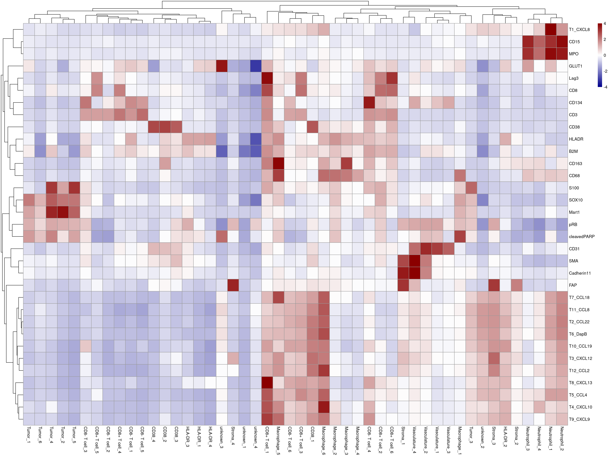
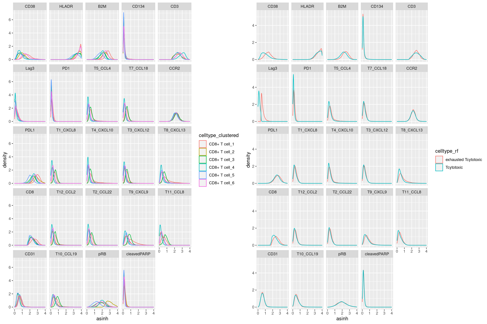
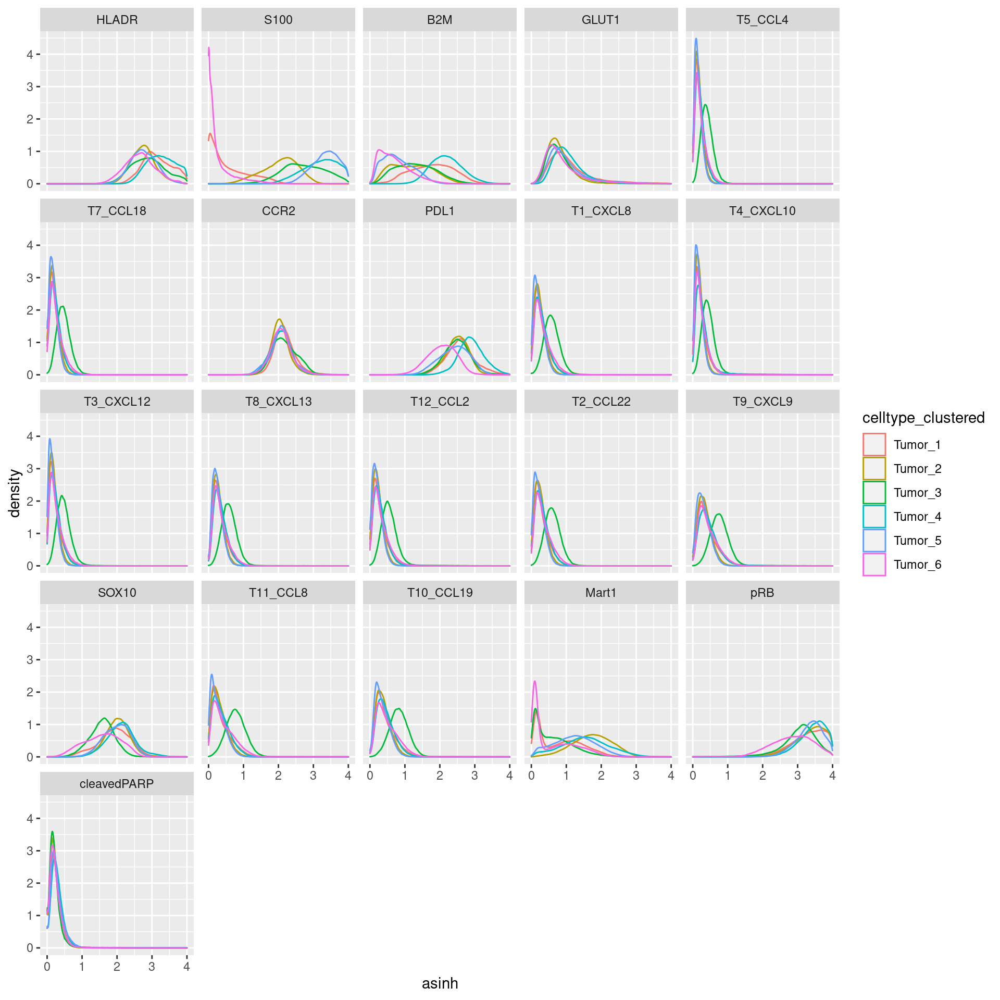
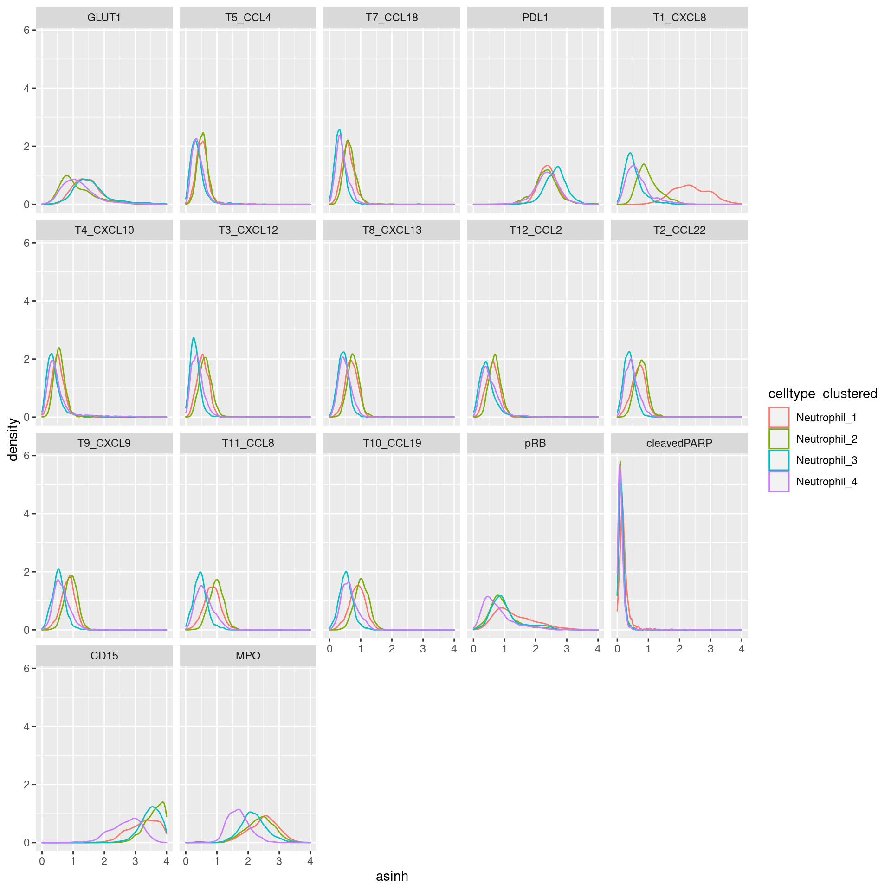
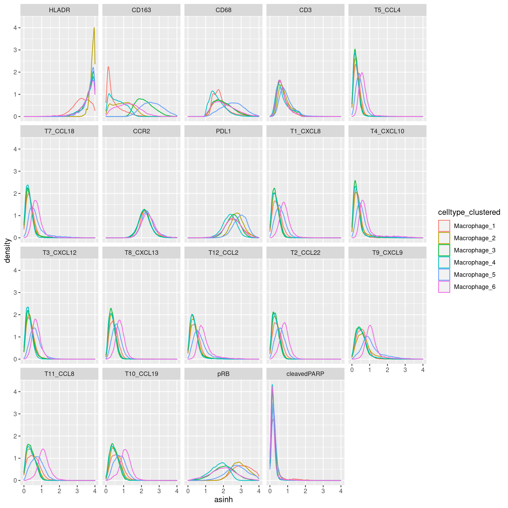
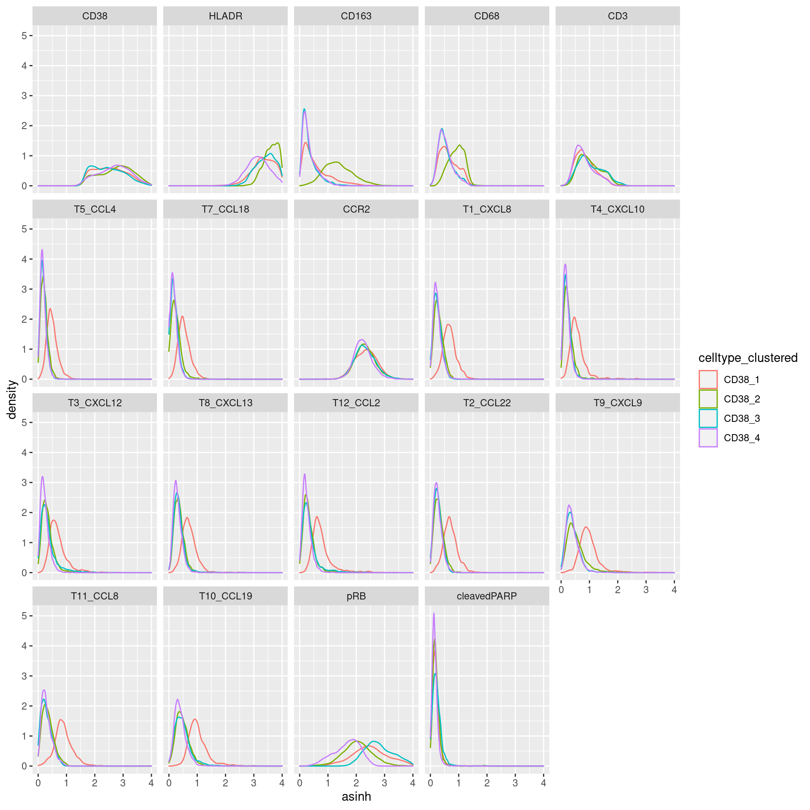
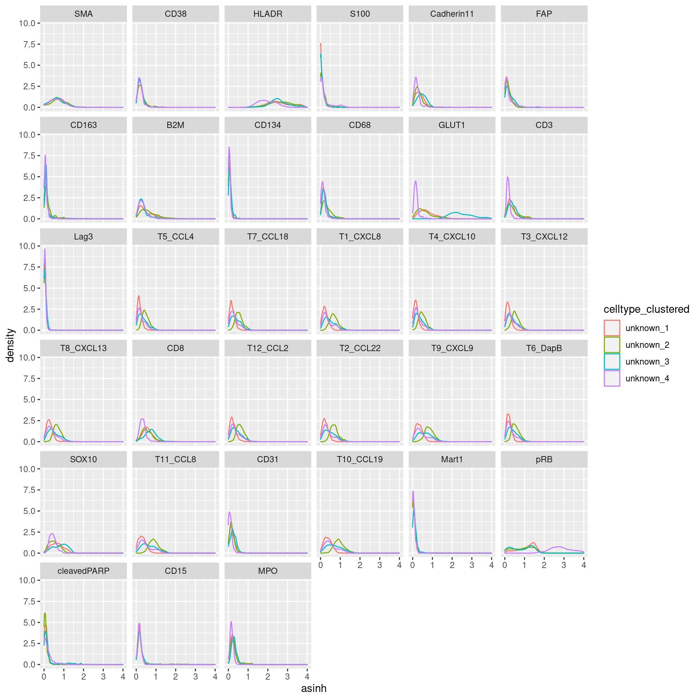

04_2_RNA_classification_subclustering
toobiwankenobi
2020-07-28
Last updated: 2022-02-10
Checks: 7 0
Knit directory: MelanomaIMC/
This reproducible R Markdown analysis was created with workflowr (version 1.7.0). The Checks tab describes the reproducibility checks that were applied when the results were created. The Past versions tab lists the development history.
Great! Since the R Markdown file has been committed to the Git repository, you know the exact version of the code that produced these results.
Great job! The global environment was empty. Objects defined in the global environment can affect the analysis in your R Markdown file in unknown ways. For reproduciblity it’s best to always run the code in an empty environment.
The command set.seed(20200728) was run prior to running the code in the R Markdown file. Setting a seed ensures that any results that rely on randomness, e.g. subsampling or permutations, are reproducible.
Great job! Recording the operating system, R version, and package versions is critical for reproducibility.
Nice! There were no cached chunks for this analysis, so you can be confident that you successfully produced the results during this run.
Great job! Using relative paths to the files within your workflowr project makes it easier to run your code on other machines.
Great! You are using Git for version control. Tracking code development and connecting the code version to the results is critical for reproducibility.
The results in this page were generated with repository version a2860df. See the Past versions tab to see a history of the changes made to the R Markdown and HTML files.
Note that you need to be careful to ensure that all relevant files for the analysis have been committed to Git prior to generating the results (you can use wflow_publish or wflow_git_commit). workflowr only checks the R Markdown file, but you know if there are other scripts or data files that it depends on. Below is the status of the Git repository when the results were generated:
Ignored files:
Ignored: .DS_Store
Ignored: .Rproj.user/
Ignored: Table_S4.csv
Ignored: analysis/.DS_Store
Ignored: analysis/._.DS_Store
Ignored: code/.DS_Store
Ignored: code/._.DS_Store
Ignored: data/.DS_Store
Ignored: data/._.DS_Store
Ignored: data/data_for_analysis/
Ignored: data/full_data/
Unstaged changes:
Modified: analysis/Figure_5.rmd
Modified: analysis/Supp-Figure_12.rmd
Modified: analysis/Supp-Figure_13.rmd
Modified: analysis/Supp-Figure_5.rmd
Note that any generated files, e.g. HTML, png, CSS, etc., are not included in this status report because it is ok for generated content to have uncommitted changes.
These are the previous versions of the repository in which changes were made to the R Markdown (analysis/04_2_RNA_classification_subclustering.rmd) and HTML (docs/04_2_RNA_classification_subclustering.html) files. If you’ve configured a remote Git repository (see ?wflow_git_remote), click on the hyperlinks in the table below to view the files as they were in that past version.
| File | Version | Author | Date | Message |
|---|---|---|---|---|
| Rmd | b24a994 | toobiwankenobi | 2022-02-08 | update code to work under R 4.1.2 |
| Rmd | f9a3a83 | toobiwankenobi | 2022-02-08 | clean repo for release |
| html | 4109ff1 | toobiwankenobi | 2021-07-07 | delete html files and adapt gitignore |
| Rmd | 3203891 | toobiwankenobi | 2021-02-19 | change celltype names |
| html | 3203891 | toobiwankenobi | 2021-02-19 | change celltype names |
| Rmd | ee1595d | toobiwankenobi | 2021-02-12 | clean repo and adapt files |
| html | ee1595d | toobiwankenobi | 2021-02-12 | clean repo and adapt files |
| html | 3f5af3f | toobiwankenobi | 2021-02-09 | add .html files |
| Rmd | 9442cb9 | toobiwankenobi | 2020-12-22 | add all new files |
| Rmd | d8819f2 | toobiwankenobi | 2020-10-08 | read new data (nuclei expansion) and adapt scripts |
| Rmd | a21c858 | toobiwankenobi | 2020-08-06 | adapt pipeline |
| Rmd | 4fc7560 | toobiwankenobi | 2020-08-05 | Update 04_2_RNA_classification_subclustering.rmd |
| Rmd | 402481d | toobiwankenobi | 2020-08-05 | Update 04_2_RNA_classification_subclustering.rmd |
| Rmd | 8babce7 | toobiwankenobi | 2020-08-05 | update subclustering |
| Rmd | f20c4ac | toobiwankenobi | 2020-08-05 | Update 04_2_RNA_classification_subclustering.rmd |
| Rmd | 2c11d5c | toobiwankenobi | 2020-08-05 | add new scripts |
| Rmd | 73881bb | toobiwankenobi | 2020-07-30 | add code to files from old repo |
| Rmd | cf46cfa | toobiwankenobi | 2020-07-28 | create files |
Introduction
In this script we try to set global thresholds for some key markers (CD3 etc) and then sub-cluster the respective cells with markers that we know are expressed on those cells.
Preparations
knitr::opts_chunk$set(echo = TRUE, message= FALSE)
knitr::opts_knit$set(root.dir = rprojroot::find_rstudio_root_file())Load libraries
sapply(list.files("code/helper_functions/", full.names = TRUE), source) code/helper_functions//calculateSummary.R
value ?
visible FALSE
code/helper_functions//censor_dat.R
value ?
visible FALSE
code/helper_functions//detect_mRNA_expression.R
value ?
visible FALSE
code/helper_functions//DistanceToClusterCenter.R
value ?
visible FALSE
code/helper_functions//findMilieu.R code/helper_functions//findPatch.R
value ? ?
visible FALSE FALSE
code/helper_functions//getInfoFromString.R
value ?
visible FALSE
code/helper_functions//getSpotnumber.R
value ?
visible FALSE
code/helper_functions//plotCellCounts.R
value ?
visible FALSE
code/helper_functions//plotCellFractions.R
value ?
visible FALSE
code/helper_functions//plotDist.R code/helper_functions//read_Data.R
value ? ?
visible FALSE FALSE
code/helper_functions//scatter_function.R
value ?
visible FALSE
code/helper_functions//sceChecks.R
value ?
visible FALSE
code/helper_functions//validityChecks.R
value ?
visible FALSE sapply(list.files("/Volumes/server_homes/daniels/Git/imcRtools/R/", full.names = TRUE), source)named list()library(LSD)
library(SingleCellExperiment)
library(ggplot2)
library(scater)
library(viridis)
library(igraph)
library(CATALYST)
library(workflowr)
library(gridExtra)
library(dplyr)Load data
sce <- readRDS(file = "data/data_for_analysis/sce_RNA.rds")Marker for Clustering
Define Superclasses for subclustering
# store labels from randomForest separately
sce$celltype_rf <- sce$celltype
# assign superclasses
sce[,sce$celltype_rf %in% c("exhausted Tcytotoxic", "Tcytotoxic")]$celltype <- "CD8+ T cell"
sce[,sce$celltype_rf %in% c("CD134+ Tcell", "CD134- Tcell")]$celltype <- "CD8- T cell"Definition of markers used for subclustering the classified cells
marker_list <- list()
marker_list$Stroma <- c("SMA", "CK5", "Cadherin11", "FAP","pRB","B2M","GLUT1","T5_CCL4","T7_CCL18","CCR2","T1_CXCL8",
"T4_CXCL10","T8_CXCL13","T3_CXCL12","T12_CCL2","T2_CCL22","T9_CXCL9","T11_CCL8","CD31",
"T10_CCL19","cleavedPARP")
marker_list$Tumor <- c("HLADR", "S100","B2M","GLUT1","PDL1","SOX10","T5_CCL4","T7_CCL18","CCR2","T1_CXCL8","T4_CXCL10","T8_CXCL13",
"T3_CXCL12","T12_CCL2","T2_CCL22","T9_CXCL9","T11_CCL8","T10_CCL19","cleavedPARP",
"Mart1","pRB")
marker_list$Neutrophil <- c("CD15", "PDL1","GLUT1", "MPO","T5_CCL4","T7_CCL18","T1_CXCL8","T4_CXCL10","T8_CXCL13",
"T3_CXCL12","T12_CCL2","T2_CCL22","T9_CXCL9","T11_CCL8","T10_CCL19","cleavedPARP", "pRB")
marker_list$`CD8- T cell` <- c("CD3", "CD8", "PD1", "Lag3", "CCR2","CD38","PDL1", "HLADR", "CD134","T5_CCL4", "B2M", "CD31",
"T7_CCL18","T1_CXCL8","T4_CXCL10","T8_CXCL13","T3_CXCL12","T12_CCL2","T2_CCL22","T9_CXCL9",
"T11_CCL8","T10_CCL19","cleavedPARP", "pRB")
marker_list$`CD8+ T cell` <- c("CD3", "CD8", "PD1", "Lag3", "CCR2","CD38","PDL1", "HLADR", "CD134","T5_CCL4", "B2M", "CD31",
"T7_CCL18","T1_CXCL8","T4_CXCL10","T8_CXCL13","T3_CXCL12","T12_CCL2","T2_CCL22","T9_CXCL9",
"T11_CCL8","T10_CCL19","cleavedPARP", "pRB")
marker_list$Macrophage <- c("CD68", "CD163", "HLADR", "PDL1", "CD3", "CCR2","T5_CCL4","T7_CCL18","T1_CXCL8","T4_CXCL10","T8_CXCL13",
"T3_CXCL12","T12_CCL2","T2_CCL22","T9_CXCL9","T11_CCL8","T10_CCL19","cleavedPARP", "pRB")
marker_list$Vasculature <- c("CD31", "SMA","CK5","pRB", "Cadherin11","T5_CCL4","T7_CCL18","T1_CXCL8","T4_CXCL10","T8_CXCL13",
"T3_CXCL12","T12_CCL2","T2_CCL22","T9_CXCL9","T11_CCL8","T10_CCL19","cleavedPARP", "pRB")
marker_list$`HLA-DR` <- c("HLADR","CD68","CD3","CCR2","T5_CCL4","T7_CCL18","T1_CXCL8","T4_CXCL10","T8_CXCL13",
"T3_CXCL12","T12_CCL2","T2_CCL22","T9_CXCL9","T11_CCL8","T10_CCL19","cleavedPARP", "pRB")
marker_list$CD38 <- c("HLADR","CD38","CD3","CCR2","CD163","CD68","T5_CCL4","T7_CCL18","T1_CXCL8","T4_CXCL10","T8_CXCL13",
"T3_CXCL12","T12_CCL2","T2_CCL22","T9_CXCL9","T11_CCL8","T10_CCL19","cleavedPARP", "pRB")
marker_list$unknown <- rownames(sce[rowData(sce)$good_marker,])
# check if the names of the marker list match the names of the classified cells
all(names(marker_list) %in% unique(sce$celltype))[1] TRUEClustering
Sub-cluster the whole dataset with FlowSOM
FlowSOM first because it is faster
## the FlowSOM function from CATALYST needs an another column in the rowData of the sce to work properly:
rowData(sce)$marker_class <- "state"
# vector for clustering
fs_clustering <- vector(length = ncol(sce))
# Macrophage, CD8- T cell, CD8+ T cell, Tumor will be clustered for a total of 6 clustes each
set.seed(12345)
# 6 clusters
for(i in c("CD8- T cell","Macrophage","CD8+ T cell","Tumor")){
#subset cells for clustering
cur_sce <- sce[,sce$celltype == i]
names(assays(cur_sce)) <- c("counts", "exprs","scaled_counts", "scaled_asinh")
cur_sce <- CATALYST::cluster(cur_sce, features = marker_list[i][[1]], ydim = 2, xdim = 3, maxK = 4)
fs_clustering[sce$celltype == i] <- cur_sce$cluster_id
}
# 4 clusters
for(i in c("Neutrophil","CD38","Stroma","Vasculature","HLA-DR", "unknown")){
cur_sce <- sce[,sce$celltype == i]
names(assays(cur_sce)) <- c("counts", "exprs","scaled_counts", "scaled_asinh")
cur_sce <- CATALYST::cluster(cur_sce, features = marker_list[i][[1]], ydim = 2, xdim = 2, maxK = 3)
fs_clustering[sce$celltype == i] <- cur_sce$cluster_id
}
# Save in SCE object
colData(sce)$celltype_clustered <- as.factor(fs_clustering)
sce$celltype_clustered <- paste0(sce$celltype, "_", sce$celltype_clustered)Visualization
Visulalize clustering results for FlowSOM
# Aggregate the counts
mean_sce <- calculateSummary(sce, split_by = c("celltype_clustered", "celltype"),
exprs_values = "counts")
# Exclude bad markers
mean_sce <- mean_sce[rowData(sce)$good_marker,]
# Transform and scale
assay(mean_sce, "arcsinh") <- asinh(assay(mean_sce, "meanCounts"))
assay(mean_sce, "arcsinh_scaled") <- t(scale(t(asinh(assay(mean_sce, "meanCounts")))))
# Scaled
plotHeatmap(mean_sce, exprs_values = "arcsinh_scaled",
features = rownames(sce)[rowData(sce)$good_marker],
colour_columns_by = "celltype",
labels_col = mean_sce$celltype_clustered,
show_colnames = TRUE, annotation_legend = TRUE, borders_color = NA,
color = colorRampPalette(c("dark blue", "white", "dark red"))(100),
zlim = c(-4, 4),legend = TRUE)
Numbers of cells per cluster
celltype_counts <- sce$celltype_clustered
table(celltype_counts)celltype_counts
CD38_1 CD38_2 CD38_3 CD38_4 CD8- T cell_1
1703 2323 3115 4049 24011
CD8- T cell_2 CD8- T cell_3 CD8- T cell_4 CD8- T cell_5 CD8- T cell_6
14807 13230 12678 24222 8924
CD8+ T cell_1 CD8+ T cell_2 CD8+ T cell_3 CD8+ T cell_4 CD8+ T cell_5
6013 7272 5321 10216 5908
CD8+ T cell_6 HLA-DR_1 HLA-DR_2 HLA-DR_3 HLA-DR_4
10474 13176 4636 5941 12700
Macrophage_1 Macrophage_2 Macrophage_3 Macrophage_4 Macrophage_5
7513 13380 11788 13106 8945
Macrophage_6 Neutrophil_1 Neutrophil_2 Neutrophil_3 Neutrophil_4
10696 622 1223 1701 1508
Stroma_1 Stroma_2 Stroma_3 Stroma_4 Tumor_1
2325 3956 7841 10868 72776
Tumor_2 Tumor_3 Tumor_4 Tumor_5 Tumor_6
94020 69388 89337 108154 119002
unknown_1 unknown_2 unknown_3 unknown_4 Vasculature_1
1869 549 452 313 10360
Vasculature_2 Vasculature_3 Vasculature_4
5568 4860 1424 Cluster Names
Assign names to clusters
annotations <- sce$celltype_clustered
# add annotation if wanted
#annotations[annotations == "Tumor_1"] <- "Tumor1_"
#annotations[annotations == "Tumor_2"] <- "Tumor2_"
#annotations[annotations == "Tumor_3"] <- "Tumor3_"
#annotations[annotations == "Tumor_4"] <- "Tumor4_"
#annotations[annotations == "Tumor_5"] <- "Tumor5_"
#annotations[annotations == "Tumor_6"] <- "Tumor6_"
sce$cellAnnotation <- annotations
mean_sce <- calculateSummary(sce, split_by = c("celltype_clustered","celltype"),
exprs_values = "counts")
# Exclude bad markers
mean_sce <- mean_sce[rowData(sce)$good_marker,]
# Transform and scale
assay(mean_sce, "arcsinh") <- asinh(assay(mean_sce, "meanCounts"))
assay(mean_sce, "arcsinh_scaled") <- t(scale(t(asinh(assay(mean_sce, "meanCounts")))))
plotHeatmap(mean_sce, exprs_values = "arcsinh_scaled",
features = rownames(sce)[rowData(sce)$good_marker],
colour_columns_by = c("celltype"),
labels_col = mean_sce$celltype,
show_colnames = TRUE, annotation_legend = TRUE, borders_color = NA,
color = colorRampPalette(c("dark blue", "white", "dark red"))(100),
zlim = c(-4, 4),legend = TRUE)
Clustering Quality Control
Marker expression density of clusters vs. manually gated - CD8+ T cell
# Density of Expression in different CD8+ T cell clusters vs. manually gated Lag3+ cells
cur_sce <- data.frame(colData(sce))
cur_exprs <- data.frame(t(assays(sce)[[2]]))
cur_exprs <- cbind(cur_exprs, cur_sce[,c("celltype", "celltype_rf", "celltype_clustered")])
cur_exprs$cellID <- rownames(cur_exprs)
cur_exprs <- cur_exprs %>%
reshape2::melt(id.vars = c("cellID", "celltype", "celltype_rf", "celltype_clustered"),
variable.name = "marker", value.name = "asinh")
# clustering
a <- cur_exprs %>%
filter(celltype == "CD8+ T cell" & marker %in% marker_list$`CD8+ T cell`) %>%
ggplot(data=., aes(asinh, color = celltype_clustered)) +
geom_density() +
xlim(0,4) +
facet_wrap(~marker)
# manual gating
b <- cur_exprs %>%
filter(celltype == "CD8+ T cell" & marker %in% marker_list$`CD8+ T cell`) %>%
ggplot(data=., aes(asinh, color = celltype_rf)) +
geom_density() +
xlim(0,4) +
facet_wrap(~marker)
grid.arrange(a, b, ncol = 2)Warning: Removed 17847 rows containing non-finite values (stat_density).
Removed 17847 rows containing non-finite values (stat_density).
CD8- T cell
# clustering
a <- cur_exprs %>%
filter(celltype == "CD8- T cell" & marker %in% marker_list$`CD8- T cell`) %>%
ggplot(data=., aes(asinh, color = celltype_clustered)) +
geom_density() +
xlim(0,4) +
facet_wrap(~marker)
# manual gating
b <- cur_exprs %>%
filter(celltype == "CD8- T cell" & marker %in% marker_list$`CD8- T cell`) %>%
ggplot(data=., aes(asinh, color = celltype_rf)) +
geom_density() +
xlim(0,4) +
facet_wrap(~marker)
grid.arrange(a, b, ncol = 2)Warning: Removed 33619 rows containing non-finite values (stat_density).
Removed 33619 rows containing non-finite values (stat_density).
Tumor
# clustering
cur_exprs %>%
filter(celltype == "Tumor" & marker %in% marker_list$Tumor) %>%
ggplot(data=., aes(asinh, color = celltype_clustered)) +
geom_density() +
xlim(0,4) +
facet_wrap(~marker)Warning: Removed 124307 rows containing non-finite values (stat_density).
Neutrophil
# clustering
cur_exprs %>%
filter(celltype == "Neutrophil" & marker %in% marker_list$Neutrophil) %>%
ggplot(data=., aes(asinh, color = celltype_clustered)) +
geom_density() +
xlim(0,4) +
facet_wrap(~marker)Warning: Removed 1029 rows containing non-finite values (stat_density).
Macrophage
# clustering
cur_exprs %>%
filter(celltype == "Macrophage" & marker %in% marker_list$Macrophage) %>%
ggplot(data=., aes(asinh, color = celltype_clustered)) +
geom_density() +
xlim(0,4) +
facet_wrap(~marker)Warning: Removed 47900 rows containing non-finite values (stat_density).
CD38
# clustering
cur_exprs %>%
filter(celltype == "CD38" & marker %in% marker_list$CD38) %>%
ggplot(data=., aes(asinh, color = celltype_clustered)) +
geom_density() +
xlim(0,4) +
facet_wrap(~marker)Warning: Removed 2477 rows containing non-finite values (stat_density).
unknown
# clustering
cur_exprs %>%
filter(celltype == "unknown" & marker %in% marker_list$unknown) %>%
ggplot(data=., aes(asinh, color = celltype_clustered)) +
geom_density() +
xlim(0,4) +
facet_wrap(~marker)Warning: Removed 36 rows containing non-finite values (stat_density).
SCE object
Save the single cell object
saveRDS(sce, "data/data_for_analysis/sce_RNA.rds")
sessionInfo()R version 4.1.2 (2021-11-01)
Platform: x86_64-pc-linux-gnu (64-bit)
Running under: Ubuntu 20.04.3 LTS
Matrix products: default
BLAS/LAPACK: /usr/lib/x86_64-linux-gnu/openblas-pthread/libopenblasp-r0.3.8.so
locale:
[1] LC_CTYPE=en_US.UTF-8 LC_NUMERIC=C
[3] LC_TIME=en_US.UTF-8 LC_COLLATE=en_US.UTF-8
[5] LC_MONETARY=en_US.UTF-8 LC_MESSAGES=en_US.UTF-8
[7] LC_PAPER=en_US.UTF-8 LC_NAME=C
[9] LC_ADDRESS=C LC_TELEPHONE=C
[11] LC_MEASUREMENT=en_US.UTF-8 LC_IDENTIFICATION=C
attached base packages:
[1] stats4 stats graphics grDevices utils datasets methods
[8] base
other attached packages:
[1] gridExtra_2.3 CATALYST_1.18.1
[3] igraph_1.2.11 viridis_0.6.2
[5] viridisLite_0.4.0 scater_1.22.0
[7] scuttle_1.4.0 ggplot2_3.3.5
[9] SingleCellExperiment_1.16.0 SummarizedExperiment_1.24.0
[11] Biobase_2.54.0 GenomicRanges_1.46.1
[13] GenomeInfoDb_1.30.1 IRanges_2.28.0
[15] S4Vectors_0.32.3 BiocGenerics_0.40.0
[17] MatrixGenerics_1.6.0 matrixStats_0.61.0
[19] LSD_4.1-0 dplyr_1.0.7
[21] workflowr_1.7.0
loaded via a namespace (and not attached):
[1] utf8_1.2.2 tidyselect_1.1.1
[3] grid_4.1.2 BiocParallel_1.28.3
[5] Rtsne_0.15 aws.signature_0.6.0
[7] flowCore_2.6.0 munsell_0.5.0
[9] ScaledMatrix_1.2.0 codetools_0.2-18
[11] withr_2.4.3 colorspace_2.0-2
[13] highr_0.9 knitr_1.37
[15] rstudioapi_0.13 ggsignif_0.6.3
[17] labeling_0.4.2 git2r_0.29.0
[19] GenomeInfoDbData_1.2.7 polyclip_1.10-0
[21] farver_2.1.0 pheatmap_1.0.12
[23] flowWorkspace_4.6.0 rprojroot_2.0.2
[25] vctrs_0.3.8 generics_0.1.2
[27] TH.data_1.1-0 xfun_0.29
[29] R6_2.5.1 doParallel_1.0.16
[31] ggbeeswarm_0.6.0 clue_0.3-60
[33] rsvd_1.0.5 bitops_1.0-7
[35] DelayedArray_0.20.0 assertthat_0.2.1
[37] promises_1.2.0.1 scales_1.1.1
[39] multcomp_1.4-18 beeswarm_0.4.0
[41] gtable_0.3.0 beachmat_2.10.0
[43] processx_3.5.2 RProtoBufLib_2.6.0
[45] sandwich_3.0-1 rlang_1.0.0
[47] GlobalOptions_0.1.2 splines_4.1.2
[49] rstatix_0.7.0 hexbin_1.28.2
[51] broom_0.7.12 reshape2_1.4.4
[53] yaml_2.2.2 abind_1.4-5
[55] backports_1.4.1 httpuv_1.6.5
[57] RBGL_1.70.0 tools_4.1.2
[59] ellipsis_0.3.2 jquerylib_0.1.4
[61] RColorBrewer_1.1-2 ggridges_0.5.3
[63] Rcpp_1.0.8 plyr_1.8.6
[65] base64enc_0.1-3 sparseMatrixStats_1.6.0
[67] zlibbioc_1.40.0 purrr_0.3.4
[69] RCurl_1.98-1.5 ps_1.6.0
[71] FlowSOM_2.2.0 ggpubr_0.4.0
[73] GetoptLong_1.0.5 cowplot_1.1.1
[75] zoo_1.8-9 ggrepel_0.9.1
[77] cluster_2.1.2 colorRamps_2.3
[79] fs_1.5.2 magrittr_2.0.2
[81] ncdfFlow_2.40.0 data.table_1.14.2
[83] scattermore_0.7 circlize_0.4.13
[85] mvtnorm_1.1-3 whisker_0.4
[87] ggnewscale_0.4.5 evaluate_0.14
[89] XML_3.99-0.8 jpeg_0.1-9
[91] shape_1.4.6 ggcyto_1.22.0
[93] compiler_4.1.2 tibble_3.1.6
[95] crayon_1.4.2 ggpointdensity_0.1.0
[97] htmltools_0.5.2 later_1.3.0
[99] tidyr_1.2.0 RcppParallel_5.1.5
[101] aws.s3_0.3.21 DBI_1.1.2
[103] tweenr_1.0.2 ComplexHeatmap_2.10.0
[105] MASS_7.3-55 Matrix_1.4-0
[107] car_3.0-12 cli_3.1.1
[109] parallel_4.1.2 pkgconfig_2.0.3
[111] getPass_0.2-2 xml2_1.3.3
[113] foreach_1.5.2 vipor_0.4.5
[115] bslib_0.3.1 XVector_0.34.0
[117] drc_3.0-1 stringr_1.4.0
[119] callr_3.7.0 digest_0.6.29
[121] ConsensusClusterPlus_1.58.0 graph_1.72.0
[123] rmarkdown_2.11 DelayedMatrixStats_1.16.0
[125] curl_4.3.2 gtools_3.9.2
[127] rjson_0.2.21 lifecycle_1.0.1
[129] jsonlite_1.7.3 carData_3.0-5
[131] BiocNeighbors_1.12.0 fansi_1.0.2
[133] pillar_1.7.0 lattice_0.20-45
[135] plotrix_3.8-2 fastmap_1.1.0
[137] httr_1.4.2 survival_3.2-13
[139] glue_1.6.1 png_0.1-7
[141] iterators_1.0.13 Rgraphviz_2.38.0
[143] nnls_1.4 ggforce_0.3.3
[145] stringi_1.7.6 sass_0.4.0
[147] BiocSingular_1.10.0 CytoML_2.6.0
[149] latticeExtra_0.6-29 cytolib_2.6.1
[151] irlba_2.3.5